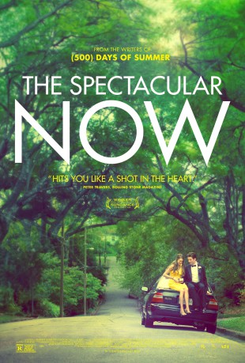

gesehen am 12.01.2016
gesehen am 12.01.2016Alternativ: The Spectacular Now gesehen am 12.01.2016
 
 IMDB-Wertung: 7.1 / 10
IMDB-Wertung: 7.1 / 10  Metascore:
Metascore: 
Sutter Keely lives in the now. It's a good place for him. A high school senior, charming and self-possessed, he's the life of the party, loves his job at a men's clothing store, and has no plans for the future. A budding alcoholic, he's never far from his supersized, whiskey-fortified thirst-master cup. But after being dumped by his girlfriend, Sutter gets drunk and wakes up on a lawn with Aimee Finecky hovering over him. She's different: the "nice girl" who reads science fiction and doesn't have a boyfriend. While Aimee has dreams of a future, Sutter lives in the impressive delusion of a spectacular now, yet somehow, they're drawn together.
Jahr: 2013
Dauer: 95 Minuten
FSK: 12
Land: USA Studio: A24Tonspuren: DD5.1 - ,
Untertitel:
Auflösung: 1080p (1920×800) Größe: 6973 MB
Regisseur: James Ponsoldt
Drehbuch: Scott Neustadter, Michael H. Weber, Tim Tharp
Soundtrack: Rob Simonsen
Darsteller:
 Miles Teller als Sutter
Miles Teller als Sutter Shailene Woodley als Aimee
Shailene Woodley als Aimee Brie Larson als Cassidy
Brie Larson als Cassidy Dayo Okeniyi als Marcus
Dayo Okeniyi als Marcus Kyle Chandler als Tommy
Kyle Chandler als Tommy Jennifer Jason Leigh als Sara
Jennifer Jason Leigh als Sara Whitney Goin als Aimee's Mom
Whitney Goin als Aimee's Mom Andre Royo als Mr. Aster
Andre Royo als Mr. Aster Bob Odenkirk als Dan
Bob Odenkirk als Dan Mary Elizabeth Winstead als Holly
Mary Elizabeth Winstead als Holly E. Roger Mitchell als Doctor
E. Roger Mitchell als Doctor Kaitlyn Dever als Kristal
Kaitlyn Dever als Kristal Gary Weeks als Joe
Gary Weeks als Joe Karen Strassman als Additional Voices
Karen Strassman als Additional Voices Levi Miller als Erik Wolff
Levi Miller als Erik Wolff Keith Silverstein als Additional Voices
Keith Silverstein als Additional VoicesDatei: X:\2013(N-Z)\Spectacular Now, The (2013, FSK, 1920x800).mkv seit 14.02.2015
Festplatte: HD 2013(I-Z)-2014(A-Z)
 Es gibt insgesamt 133 Filme in der Gruppe '2013(N-Z)'
Es gibt insgesamt 133 Filme in der Gruppe '2013(N-Z)'